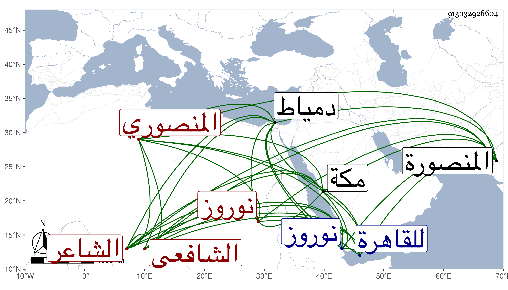

0902Sakhawi.DawLamic.ITO20230111-ara1.EIS1600.913032926604
Biography ID: 913032926604
57
محمد بن أحمد بن عمر بن كميل بضم الكاف بن عوض بن رشيد بالتكبير بن محمد وقيل علي الشمس المنصوري الشافعي الشاعر والد البدر محمد ويعرف بابن كميل . ولد في صفر سنة خمس وسبعين وسبعمائة بالمنصورة قرية قريبة لدمياط ونشأ بها فحفظ القرآن والحاوي وغيره وتردد للقاهرة للاشتغال وغيره فتفقه بالبلقيني وابن الملقن والشهاب القلقشندي والزين بن النظام والشهاب الجوجري وأخذ في الفقه والأصول عن بعض هؤلاء بل وعن غيرهم ، وتميز وتعانى الأدب ففاق في النظم وولي قضاء بلده مناوبة بينه وبين ابن عم والده الشمس محمد بن خلف بن كميل الآتي واستقل به عن المؤيد لكونه امتدحه بقصيدة تائية طنانة لما رجع من سفرة نوروز وأضيف إليه معها سلمون بل زاده شيخنا أيضا منية أبن سلسيل وشكرت سيرته في ذلك كله وكذا امتدح الناصري بن البارزي وغيره من الأعيان التماسا لمساعدتهم والتوجه إليه بعنايتهم بل له قصائد نبوية وغيرها سائرة ، واشتهر اسمه وبعد صيته بذلك وكتب الناس عنه من نظمه ، وترجمه شيخنا في معجمه ووصفه بالفضل واستحضار الحاوي وقال لقيه بطريق مكة يعني سنة أربع وعشرين وطارحني بنظم منسجم ثم كثر اجتماعنا وسمعت من نظمه كثيرا ، ونحوه قوله في أنبائه وكنا نجتمع ونتذاكر في الفنون وقال غيره إنه مدح الملوك والأكابر وكان حافظا للشعر كثير الإستحضار للأدبيات والتطلع إليها معدودا من المكثرين في ذلك مع مشاركة في الفقه وغيره وثروة من الزرع والتجارة وكثرة تودد وحلو محاضرة وحشمة وطرح تكلف وممن ترجمه شيخنا في معجمه وأنبائه وابن فهد وكاتبه . مات فجأة في شعبان سنة ثمان وأربعين سقطت منارة جامع سلمون من ريح عاصف على خلوته وهو بها فمات وهو جالس غما تحت الردم رحمه الله وإيانا . ومن نظمه في هاجر :
| هل كاشف كربة اكتئابي | أو راحم ذلتي وعاذر |
| لسوء حظي سقام جسمي | مواصل والحبيب هاجر |
وقوله :
| لله ثغر حبيب زانه فرم | ومثله رمت لما أن لثمت فما |
| وحين فوق سهم اللحظ قلت له | لا ترم قلب محب مشته فرما |
وقوله :
| يقولون بالساقي شغفت محبة | فقلت لما بالقلب من نبل أحداق |
| فكم ليلة بات السرور منادمي | بطلعته والتفت الساق بالساق |
وقوله :
| ولما أتى الكذاب دجال وقته | وقد فتنت ألفاظه كل مسلم |
| فقولوا له إن ابن مريم قد أتى | وهل يقتل الدجال إلا ابن مريم |
وأوردت في ترجمته من التبر المسبوك والمعجم غير هذا وشعره منتشر فلا نطيل به ، وهو في عقود المقريزي باختصار .
